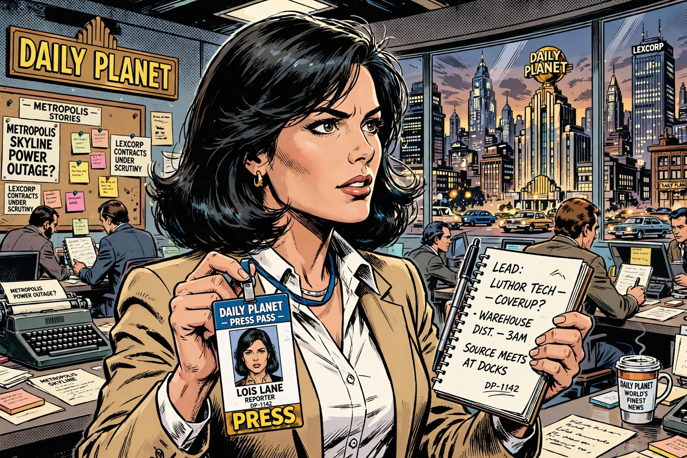

Lois Lane is a fictional character appearing in American comic books published by DC Comics. Created by Jerry Siegel and Joe Shuster, she debuted in Action Comics #1 (1938) as an award-winning journalist at the Daily Planet and the primary love interest — and later wife — of Superman / Clark Kent.

Lois was a pioneering female character: ambitious, inquisitive and often putting herself in danger pursuing stories. Over decades she moved from suspecting Clark was Superman, to marrying him in the 1990s comics continuity, and becoming mother to Jon Kent.
She has been portrayed by Margot Kidder in the Christopher Reeve films, Teri Hatcher in Lois & Clark, Erica Durance in Smallville, Amy Adams in the DC Extended Universe, and Rachel Brosnahan in Superman (2025).